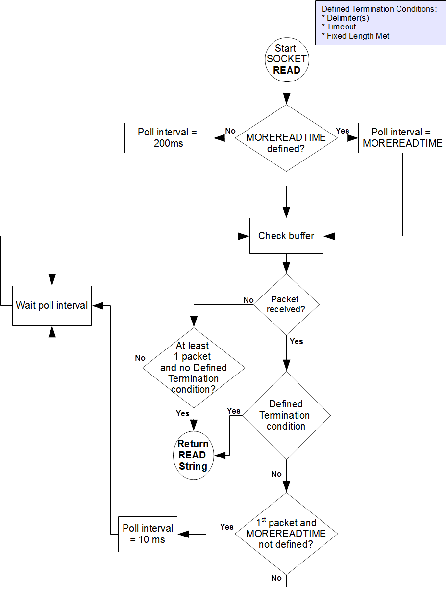

SOCKET devices are used to access and manipulate sockets. A SOCKET device can have unlimited associated sockets. The default limit is 64. Set the environment variable gtm_max_sockets to the number of maximum associated sockets sockets that you wish to set for a GT.M process. $VIEW("MAX_SOCKETS")returns the current value of the maximum number of associated sockets.
At any time, only one socket from the collection can be the current socket. If there is no current socket, an attempt to READ from, or WRITE to the device, generates an error.
Sockets can be attached and detached from the collection of sockets associated with a device. Detached sockets belong to a pseudo-device called the "socketpool". SOCKET devices use "YGTMSOCKETPOOL" to identify the socket pool; an attempt OPEN a device of that name produces a DEVNAMERESERVED error. A process can detach a socket from a device and later attach it to the same device or another device.
![[Caution]](../common/images/caution.jpg) | Caution |
|---|---|
Currently, GT.M does not produce an error if a socket is attached to a device having a different CHSET. |
![[Note]](../common/images/note.jpg) | Note |
|---|---|
Exception handler (EXCEPTION) operates at the SOCKET device level and error trapping (IOERROR) operates the socket-level. So, one EXCEPTION operates on all sockets of a SOCKET device and IOEROR can be individually turned on or off for each socket. |
From an application perspective, the transport layers used by a socket device are stream-oriented, with no provisions for implicit application messages. Therefore, the following are two common protocols used to segment application messages.
One method is to use a, typically small, fixed length message containing the length of the next, variable length, message. In GT.M a simplistic writer might be:
Write $Justify($Length(x),4),x
A corresponding simplistic reader might be:
read len#4,x#len
The advantage of this approach is that the message content (the value of x in the code fragments above) can contain any character. The disadvantage is that detecting that the protocol has become desynchronized is a problem.
The other common method is to place a delimiter between each application message. The protocol breaks if a message ever includes a delimiter as part of its content.
The SOCKET device provides a facility for recognizing delimiters to simplify parsing messages.
TCP/IP is a stream-based protocol that guarantees that bytes arrive in the order in which they were sent. However, it does not guarantee that they will be grouped in the same packets.
If packets arrive infrequently, or at varying rates that are sometimes slow, a short interval can waste CPU cycles checking for an unlikely event. On the other hand, if the handling of packets is time critical, a long interval can introduce an undesirable latency. If packets arrive in a rapid and constant flow (an unusual situation), the interval doesn't matter as much, as there is always something in the buffer for the READ to work with. If you do not specify MOREREADTIME, SOCKET READ implements a dynamic approach of using a longer first interval of 200 ms when it finds no data, then shortening the interval to 10 ms when data starts to arrive. If you specify an interval, the SOCKET device always uses the specified interval and does not adjust dynamically. For more information on MOREREADTIME, refer to a??MOREREADTIMEa??.
Most SOCKET READ operations terminate as a result of the first condition detected from (a) receipt of delimiters, (b) receipt of the maximum number of characters, or (c) expiration of a timeout. Note that all of these conditions are optional, and a specific READ may specify zero or more of them. This section refers to these three conditions as "defined terminating conditions". If a SOCKET READ is not subject to any of the defined terminating conditions, it terminates after it has received at least one character followed by an interval with no new characters. An error can also terminate a READ. While none of the terminating conditions is satisfied, the READ continues.
The following flowchart represents the logic of a SOCKET READ.
A SOCKET READ operation terminates if any of the following conditions are met:
|
Terminating Conditions |
Argument Contains |
$Device |
$Key |
$Test |
|---|---|---|---|---|
|
Error |
Empty String |
Error String |
Empty String |
1 |
|
Timeout* |
Data received before timeout |
Empty String |
Empty String |
0 |
|
Delimiter* |
Data up to, but not including the delimiter |
Empty String |
Delimiter String |
1 |
|
Fixed Length Met* |
String of Fixed Length |
Empty String |
Empty String |
1 |
|
Width |
Full width String |
Empty String |
Empty String |
1 |
|
Buffer Emptied |
One (1) to as many characters as provided by the transport interface before waiting for an interval (in milliseconds) specified by MOREREADTIME with no additional input. If MOREREADTIME is not specified, buffer is checked every 200 milliseconds for its first input and then every 10 milliseconds until no new input arrives and no other terminating conditions are met. IF MOREREADTIME is specified, READ uses that value exclusively for buffer checks. |
Empty String |
Empty String |
1 |
* denotes Defined Terminating Conditions
A non-fixed-length read, with no timeout and no delimiters (the sixth row in the above table) requires a complex implementation of sequence of READs to ensure a predictable result. This is because the transport layer stream fragments delivered to the reader has only accidental correspondence with the operations performed by the writer. For example, the following:
Write "Message 1","Message 2" is presented to the reader as the stream "Message1Message2" but it can take from one (1) to 18 READ commands to retrieve the entire stream.
Messaging protocol should implement READ in any of the following ways:
Use a delimiter to separate messages (generic READ and possibly a larger value for MOREREADTIME).
Specify messages as <length, value> pairs (a pair of fixed-length READs (READ # ) and possibly a larger value for MOREREADTIME).
Parse the bytes or characters as they come in (possibly a smaller value for MOREADTIME)
Each device can have from zero (0) to 64 delimiters associated with it. Each delimiter can be from one (1) to 64 characters. All the delimiters declared for a device are valid for any READ from any associated socket, which means, any of the defined delimiters terminate the READ. The actual terminating delimiter is available in $KEY. A WRITE to a socket associated with a device with one or more delimiters inserts the first of the delimiters for any WRITE ! format.
The READ command may be used to obtain data from a socket. A READ operation terminates if any of the following are detected, in the order specified below:
|
Terminating |
Argument Contains |
$Device |
$Key (Continued) |
|---|---|---|---|
|
Error |
Empty string |
Error string |
Empty string |
|
Timeout |
Data received before timeout |
Empty string |
Empty string |
|
Delimiter |
Data up to, but not including the delimiter |
Empty string |
Delimiter string |
|
Fixed length met |
String of fixed length |
Empty string |
Empty string |
|
Buffer emptied |
One (1) to as many characters as happen to be provided by the transport interface |
Empty string |
Empty string |
A non-fixed-length read, with no timeout and no delimiters requires a complex implementation of sequence of READs to ensure a predictable result. This is because the transport layer stream fragments delivered to the reader has only accidental correspondence with the operations performed by the writer. For example, the following
Write "Message 1","Message 2"
is presented to the reader as the stream "Message1Message2" but it can take from one (1) to 18 READ commands to retrieve the entire stream.
The WRITE command sends data to a socket.
WRITE ! inserts the character(s) of the first I/O delimiter (if any) to the sending buffer. If "ZFF=expr" has been specified, WRITE # inserts the characters of expr. Otherwise WRITE # has no effect. WRITE ! and WRITE # always maintain $X and $Y in a fashion that emulates a terminal cursor position except when the device is OPENed with a UTF CHSET because the units for $X and $Y for terminals are in display columns while for sockets they are in codepoints.
The WRITE command for SOCKET devices accepts the following controlmnemonics:
/L[ISTEN][(numexpr)]
where numexpr specifies the listen queue depth for a listening socket. The value of numexpr must be between 1 and the system-enforced maximum. By default, an OPEN or USE with LISTEN immediately sets the listen queue size to 1. For vendor-specific information on how to change your system's maximum queue length, refer to the listen manpage.
/W[AIT][(timeout)]
where timeout is a numeric expression that specifies how long in seconds a server waits for a connection or data to become available on one of the sockets in the current Socket Device.
| Note |
|---|---|
If the current Socket Device is $PRINCIPAL and input and output are different SOCKETs, WRITE /WAIT applies to the input side of the device. |
WRITE /PASS([targetpid],[timeout],handle[,handle]...)
WRITE /PASS allows a GT.M process to send DETACHed TCP or LOCAL sockets (that is, sockets in the socket pool) to another GT.M process. The receiving process should execute WRITE /ACCEPT to receive the socket.
If a numeric targetpid is specified, GT.M matches the value against the process id ($JOB) of the process receiving the sockets. GT.M uses a system service to perform this check on platforms that support it - currently: Linux and AIX. If the pids do not match, GT.M issues a PEERPIDMISMATCH error and does not transfer the sockets.
If a numeric timeout is specified, GT.M sets $TEST to 1 if the transfer completes within the specified time, and otherwise sets $TEST to 0 and does not transfer any of the sockets.
Each handle specifies a socket in the socket pool.
On a successful transfer, GT.M eliminates access by the sending process to the specified and sent sockets. In any case where the transfer does not complete, GT.M retains all the sockets in the socket pool of the sender.
WRITE /ACCEPT(.lvar,[sourcepid],[timeout][,[handle]]...)
WRITE /ACCEPT allows a GT.M process to receive a DETACHed TCP or LOCAL sockets (that is, sockets in the socket pool) from another GT.M process . The sending process should execute WRITE /PASS to send the socket.
lvar is an unsubscripted local variable name (lvn) which must be passed by reference indicated with a period (".") prefix. On successful completion, the specified unsubscripted lvn contains the handles of the received socket, in the order they were sent, delimited with a vertical bar ("|"). GT.M places the sockets in the socket pool, so the process can ATTACH them to an appropriate SOCKET device for subsequent use.
If a numeric sourcepid is specified, GT.M matches the value against the process id ($JOB) of the process sending the sockets. If the pids do not match, GT.M issues a PEERPIDMISMATCH error and does not transfer the sockets.
If a numeric timeout is specified, GT.M sets $TEST to 1 if the transfer completes within the specified time, and otherwise sets $TEST to 0 and does not transfer the sockets.
If any handles are specified, GT.M assigns the provided handles to the received sockets in the order in which they appear in the WRITE /PASS of the sending process; empty items in the comma delimited handle list act to preserve ordering. Where the list provides no handle, the socket retains the handle provided by the sender. In either case, if there is already a socket with the transfer handle in the socket pool, GT.M generates a new handle for the transfer socket. GT.M ignores excess handles specified beyond the number of incoming sockets.
Both WRITE /PASS and WRITE /ACCEPT require the current $IO to be a SOCKET device with a CONNECTed (not LISTENing) and LOCAL domain (not TCP) current socket. GT.M issues CONNSOCKREQ or LOCALSOCKREQ errors, respectively, when those conditions are not met.
SOCKET devices do not support mixing other READs and WRITEs with socket passing on the same CONNECTED LOCAL socket and produce SOCKPASSDATAMIX errors. The application may perform multiple WRITE /PASS and WRITE /ACCEPT operations in either direction on the socket before issuing a CLOSE.
Note that the receiving process must establish desired deviceparameters (e.g., DELIMITER) for a socket either by ATTACHing it to a SOCKET device that provides the characteristic for all its sockets, or by a subsequent USE that specifies the appropriate deviceparameter(s). GT.M transfers only the socket connection itself, the socket handle, and buffered socket data (if any).
WRITE /TLS(option[,[timeout][,tlsid[,cfg-file-options]])
SOCKET devices support encrypted connections with TLS using an encryption plugin. GT.M ships with a reference implementation of the plugin which uses OpenSSL; the reference implementation also supports TLS for GT.M replication streams. OpenSSL options are controlled by a configuration file. The WRITE /TLS command activates this feature for connected sockets.
option is "server", "client", or "renegotiate". "server" or "client" indicates which TLS role to assume. The server role requires a certificate specified in the configuration file section with the label matching tlsid. The client role may require a certificate depending on the OpenSSL options. If a timeout is specified for options "client" or "server", GT.M sets $TEST to 1 if the command successfully completed or to 0 if it timed out. $DEVICE provides status information in case of an error. ZSHOW "D" includes "TLS" in the second line of the output for an encrypted socket.
"renegotiate" applies only to a server socket. It allows applications to request a TLS renegotiation. Renegotiation requires the suspension of application communication and the application must read all pending data before initiating a renegotiation. This means that in the communication protocol used, both parties must be at a known state when renegotiating keys. For example, in GT.M replication, one party sends a renegotiation request and waits for an acknowledgement before initiating the renegotiation.
tlsid refers to the name of a section in the configuration file specified by the gtmcrypt_config environment variable. If tlsid is not specified with the "renegotiate" option and cfg-file-options are specified, GT.M creates a virtual section by appending "-RENEGOTIATE" to the tlsid used to enable TLS on the socket. For the renegotiate option, if no section named tlsid is present in the configuration file, GT.M creates a virtual section with that name for the life of the process.
cfg-file-options specifies configuration file options. Note cfg-file-options override those options if they are already specified in the configuration file except ssl-options and verify-level which are merged.
Supported cfg-file-options for the "renegotiate" command are (case-sensitive): verify-depth, verify-level, verify-mode, session-id-hex, and CAfile. WRITE /TLS ignores all other configuration file options whether given on the command or in the configuration file. For more information on the supported configuration options, refer to the Creating a Configuration File section of the Administration and Operations Guide.
| Note |
|---|---|
Note that SOCKET device actions may produce the following errors: TLSDLLOPEN, TLSINIT, TLSCONVSOCK, TLSHANDSHAKE, TLSCONNINFO, TLSIOERROR, and TLSRENEGOTIATE. |
The TLS plugin uses OpenSSL options in the configuration file specified under the tls: label as the default for all TLS connections and under the specific labels to override the defaults for corresponding connections.
GT.M buffers WRITEs to TLS enabled sockets until a subsequent USE :FLUSH, WRITE !, WRITE #, or an internal 400 millisecond timer expires.
| Note |
|---|---|
Because this functionality has a wide variety of user stories (use cases) and has substantial complexity, although the code appears robust, we are not confident that we have exercised a sufficient breadth of use cases in testing. Also we may make changes in future releases that are not entirely backwards compatible. We encourage you to use with this facility in development and testing, and to provide us with feedback. If you are an FIS customer and wish to use this in production, please contact us beforehand to discuss your use case(s). |
| Note |
|---|---|
Owing to the range of OpenSSL versions in use across the breadth of platforms and versions supported by GT.M, on all platforms, but especially on non-Linux UNIX platforms, FIS recommends rebuilding the plugin from sources included with the GT.M binary distribution with the specific version of OpenSSL installed on your systems for any production or production staging environments that use TLS. For more information on recompiling the reference implementation, refer to the Installing GT.M chapter of Administration and Operations Guide. |
Each socket may be in one of the following states (observable through $KEY):
CREATE-indicates that the socket exists.
ESTABLISHED-After a successful OPEN or USE with the CONNECT device parameter or when GT.M was started with a socket as the $PRINCIPAL device.
LISTENING-indicates that the OPEN or USE with the LISTEN deviceparameter was successful and a listen queue was established.
A listening socket used for accepting new connections goes through these three states in one step with a single OPEN or USE. When a server does a WRITE /WAIT, a client can establish a connection which creates a new server socket. $KEY includes information about this new socket in the form of CONNECT|handle|<address> where <address> is the IP address for TCP sockets and path for LOCAL sockets.
Each socket may have one or more sockets waiting for either an incoming connection or data available to READ (observable through $ZKEY). $ZKEY contains semi- colon (";") separated list of entries detailing any waiting sockets for a current SOCKET device.
For more information on $KEY and $ZKEY, refer to a??Intrinsic Special Variablesa??.
The following table provides a brief summary of deviceparameters for socket devices.
|
Error Processing Deviceparameters | ||
|---|---|---|
|
DEVICEPARAMETER |
COMMAND |
COMMENT |
|
EXCEPTION=expr |
O/U/C |
Controls device-specific error handling. |
|
IOERROR=strexpr |
O/U |
use [NO]TRAP as strexpr If $LENGTH(strexpr)&("Tt"[$EXTRACT(strexpr)) then Error Trapping is enabled; otherwise the application must check $DEVICE for errors. |
|
Socket Management Deviceparameters | ||
|---|---|---|
|
DEVICEPARAMETER |
COMMAND |
COMMENT |
|
ATTACH=strexpr |
O/U |
With OPEN, ATTACH assigns expr as the handle name to the newly created socket With USE, expr specifies the handle of a socket in the socketpool. |
|
O/U |
Creates a client connection with a server, which is located by the information provided by expr. | |
|
[NO]DELIMITER[=strexpr] |
O/U |
Establishes or replaces the list of delimiters used by the newly created socket. |
|
U |
Removes the socket identified by expr from the current socket device, without affecting any existing connection of that socket, and places it in the socketpool. | |
|
LISTEN=expr |
O/U |
Allocate a new socket to listen for a connection. |
|
MOREREADTIME=intexpr |
O/U |
The polling interval (in milliseconds) that a SOCKET device uses to check for arriving packet |
|
SOCKET=expr |
U |
Makes the socket specified by the handle named in expr the current socket for the Socket device. |
|
U |
Controls buffering of data packets by the system TCP stack using the TCP_NODELAY option to the setsockopt system call. ZNODELAY must be fully spelled out. | |
|
Format Deviceparameters | ||
|---|---|---|
|
DEVICEPARAMETER |
COMMAND |
COMMENT |
|
[NO]FILTER[=strexpr] |
U |
strexpr specifies character filtering for socket output. |
|
LENGTH=intexpr or ZLENGTH=intexpr |
U |
Sets virtual page length for socket device. |
|
ICHSET=strexpr |
O/U/C |
strexpr specifies input character set |
|
OCHSET=strexpr |
O/U/C |
strexpr specifies output character set |
|
O/U |
Controls handling of records longer than the device width. | |
|
WIDTH=intexpr |
U |
Controls the maximum length of an output message. |
|
Z[NO]FF[=strexpr] |
O/U |
Controls whether and what characters to send in response to a WRITE #. |
The sockexamplemulti32.m routine shows the use of $KEY and $ZKEY in a basic
socket I/O setup. It's functionality is atypical in order to demonstrate a number of features. It launches two jobs: a server process which opens a listening socket
and a client process which makes five connections to the server. The server sends a message to each connection socket. Even-numbered client sockets read the message
partially but do not send a response back to the server. Odd-numbered client sockets receive the full message and respond to the server with the message "Ok.". The
server reads two characters (but the client sends three) and $ZKEY shows sockets with unread characters.Please click  to download the
sockexamplemulti32.m program and follow instructions in the comments near the top of the program file. You can also download sockexamplemulti32.m from
http://tinco.pair.com/bhaskar/gtm/doc/books/pg/UNIX_manual/sockexamplemulti32.m.
to download the
sockexamplemulti32.m program and follow instructions in the comments near the top of the program file. You can also download sockexamplemulti32.m from
http://tinco.pair.com/bhaskar/gtm/doc/books/pg/UNIX_manual/sockexamplemulti32.m.
You can start a GT.M process in response to a connection request made using inetd/xinetd. The following example uses inetd/xinetd to implement a listener which responds to connections and messages just as the prior example.
In the configuration file for xinetd, define a new service called gtmserver. Set socket_type to "stream" and wait to "no" as in the following snippet:
service gtmserver
{
disable = no
type = UNLISTED
port = 7777
socket_type = stream
wait = no
user = gtmuser
server = /path/to/startgtm
} If you define the server in /etc/services, the type and port options are not needed. For more information, the xinetd.conf man page for more details.
If you are using inetd, add a line to /etc/inetd.conf with the sockettype "stream", protocol "tcp", and specify the "nowait" flag as in the example below, which assumes a gtmserver service is defined in /etc/services:
gtmserver stream tcp nowait gtmuser /path/to/startgtm
In both of the above examples, "gtmuser" is the name of the user to own and run the gtmserver service, and "/path/to/startgtm" is the name of a script which defines some environment variables needed before invoking GT.M. Please check the man page for inetd.conf on your system as the details may be slightly different.
The minimum variables are: $gtm_dist, which specifies the directory containing the GT.M distribution, and $gtmroutines, which specifies the paths used to locate the GT.M routines. As an example:
#!/bin/bash cd /path/to/workarea export gtm_dist=/usr/local/gtm export gtmroutines="/var/myApp/o(/var/myApp/r) $gtm_dist" export gtmgbldir=/var/myApp/g/mumps.dat $gtm_dist/mumps -r start^server
When start^server begins, the $PRINCIPAL device is the current device which is the incoming connection and $KEY contains "ESTABLISHED|socket_handle| remote_ip_address". In most cases, a USE command near the beginning of the routine sets various device parameters such as delimiters.
The ZSHOW "D" command reports available information on both the local and remote sides of a TCP socket including local and remove addresses and ports.
0 OPEN SOCKET TOTAL=1 CURRENT=0 SOCKET[0]=h11135182870 DESC=0 CONNECTED ACTIVE NOTRAP REMOTE=10.1.2.3@53731 LOCAL=10.2.3.4@7777 ZDELAY ZIBFSIZE=1024 ZIBFSIZE=0